Гид по странице Smoky Eyes
Пошаговый Smoky Eyes
Техника создания глубины и выразительности взгляда
Топ средств для Smoky Eyes
Пигментированные тени и стойкие текстуры
Премиум-средства для Smoky Eyes
Интенсивный цвет и профессиональный результат
Бюджетный набор для Smoky Eyes (до 500 MDL)
Минимальный набор для эффектного макияжа глаз
Запишитесь к профессиональному визажисту
Запишитесь на Smoky Eyes макияж в Молдове и получите выразительный, стойкий образ, который подчеркнёт глубину вашего взгляда.
Что такое Smoky Eyes
Smoky Eyes — это техника макияжа глаз, направленная на создание глубокого, выразительного и слегка «дымчатого» взгляда , который подчёркивает форму глаз и делает их визуально более яркими.
Такой макияж строится на плавной растушёвке теней и переходах оттенков. Smoky Eyes создаёт эффект мягкой дымки, благодаря чему взгляд становится более интенсивным и притягательным.
Основная задача — добиться глубины без резких линий: тени должны плавно переходить друг в друга, создавая гармоничный и профессиональный результат.
Smoky Eyes идеально подходит для вечерних образов, мероприятий, фотосессий и особых случаев — он делает взгляд более выразительным, а образ — эффектным и запоминающимся.
Почему Smoky Eyes делает взгляд более глубоким и выразительным
- визуально углубляет взгляд и делает глаза более выразительными
- подчёркивает форму глаз и усиливает контраст
- создаёт эффект «дымки», который смягчает линии
- делает макияж более эффектным и вечерним
- придаёт образу чувственность и «дорогой» драматичный акцент
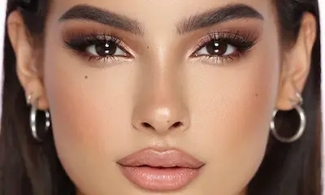
Подготовка кожи для Smoky Eyes макияжа
Smoky Eyes — это акцентный макияж глаз, поэтому особенно важно подготовить кожу, чтобы образ выглядел аккуратно, чисто и профессионально.
Неровный тон или тёмные круги могут отвлекать от макияжа глаз, поэтому база должна быть максимально ровной и свежей.
- Очищение — мягкое средство для чистой и гладкой кожи
- Увлажнение — лёгкий крем, чтобы избежать сухости
- SPF (днём) — защита от фотостарения
- Праймер — выравнивает текстуру и продлевает стойкость макияжа
- База под тени — обязательна для насыщенности и стойкости Smoky Eyes
Перед нанесением макияжа важно подождать несколько минут, чтобы средства впитались. Это позволит теням лучше растушёвываться и сделает макияж более стойким и аккуратным.
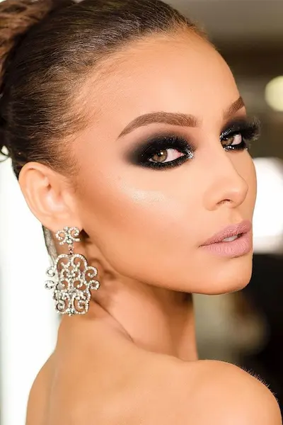
Пошаговый Smoky Eyes макияж

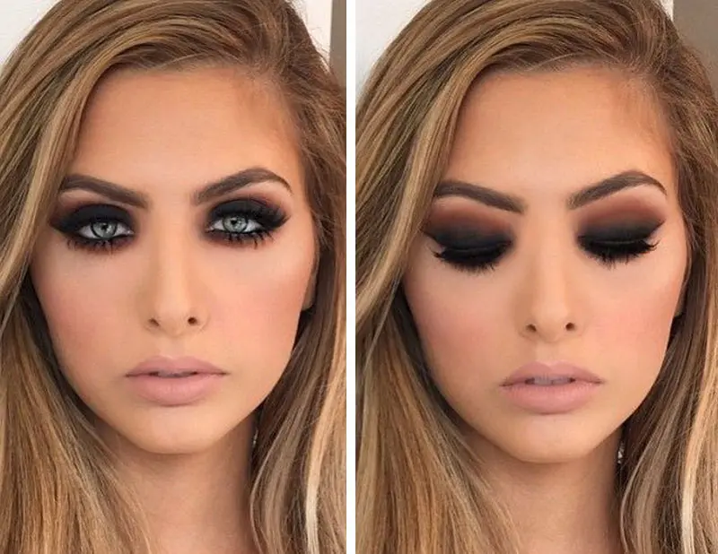
Smoky Eyes — это техника макияжа глаз, основанная на плавной растушёвке, глубине цвета и эффекте «дымки» . Главная задача — создать выразительный взгляд без резких линий.
База под тени
Обязательно используйте базу или консилер на веках. Это усиливает пигментацию теней и делает макияж более стойким.
Светлый оттенок
Нанесите нейтральный или светлый оттенок на всё веко — он станет основой для мягкой растушёвки и плавных переходов.
Тёмный акцент
Добавьте тёмные тени (коричневые, серые или чёрные) во внешний угол глаза и аккуратно растушуйте к центру.
Растушёвка
Ключевой этап Smoky Eyes — мягкая растушёвка без чётких границ. Цвет должен плавно переходить от тёмного к светлому.
Нижнее веко
Подчеркните нижнее веко теми же оттенками, слегка растушёвывая линию — это делает взгляд глубже и выразительнее.
Тушь и финал
Завершите макияж объёмной тушью или накладными ресницами. Это усилит драматический эффект и «откроет» взгляд.
Идеальный Smoky Eyes — это плавные переходы, глубина и мягкость: макияж выглядит выразительно, но аккуратно и гармонично.
Топ средств для Smoky Eyes
Smoky Eyes требует насыщенных пигментов, хорошей растушёвки и стойких формул: глубокие тени, выразительные карандаши и объёмные ресницы.
Независимый обзор. Продукты не спонсируются.
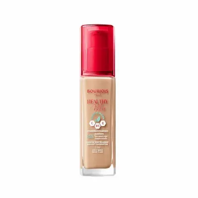
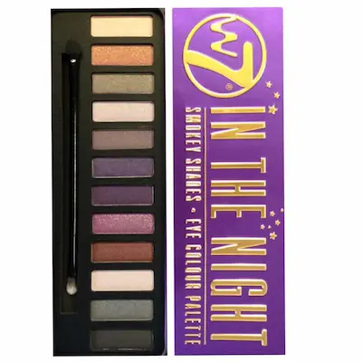

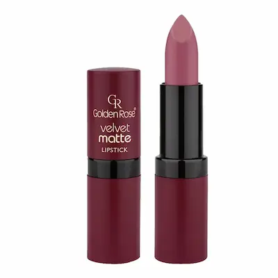
Частые ошибки в Smoky Eyes
- слишком резкие границы без растушёвки
- использование только чёрного цвета без переходных оттенков
- опускание растушёвки вниз, из-за чего взгляд «тяжелеет»
- избыточное нанесение тёмных теней на всё веко
- отсутствие баланса между глазами и губами (перегруженный образ)
Smoky Eyes требует мягкости и глубины. Главная ошибка — сделать не дымчатый эффект, а «грязное пятно» без переходов. Важно работать с градиентом и формой глаза, чтобы взгляд выглядел выразительным, а не уставшим.
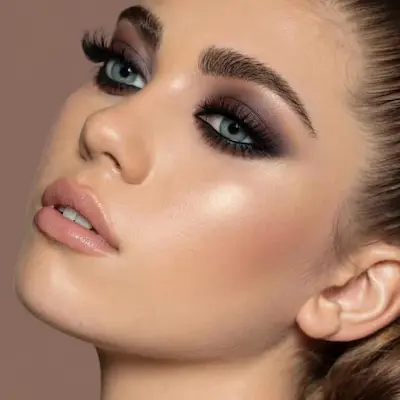
Как сделать Smoky Eyes стойким и аккуратным
Smoky Eyes должен сохранять глубину цвета и аккуратную растушёвку весь вечер. Основная задача — избежать осыпания теней и потери формы макияжа.
1. База под тени
Используйте праймер или кремовую базу, чтобы тени держались дольше и не скатывались в складку века.
2. Кремовые тени как основа
Лёгкий слой кремовых теней усиливает пигмент и помогает создать более глубокий дымчатый эффект.
3. Пошаговая растушёвка
Начинайте с мягких оттенков и постепенно добавляйте тёмные. Всегда растушёвывайте вверх и к внешнему уголку глаза.
4. Закрепление теней
Лёгкое припудривание или фиксирующие спреи помогают сохранить форму макияжа без осыпания.
5. Баланс макияжа
Если Smoky Eyes яркий, губы должны быть нейтральными — это делает образ более дорогим и гармоничным.
Идеальный Smoky Eyes — это мягкая дымка, плавные переходы и глубокий взгляд без ощущения перегруженности.
Бюджетный набор для Smoky Eyes (до 500 MDL)
💡 Общая стоимость набора: ~380–500 MDL
Независимый обзор. Продукты не спонсируются.
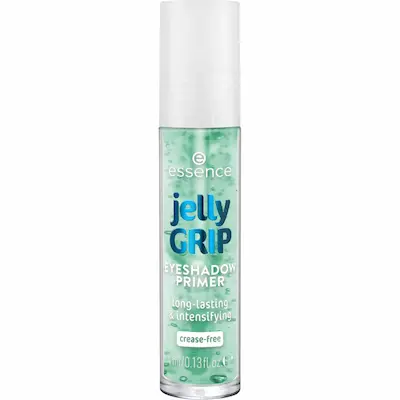
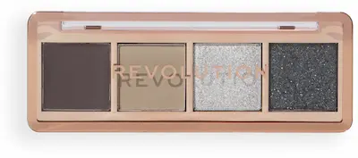
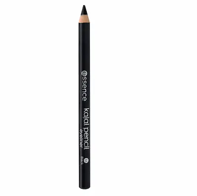

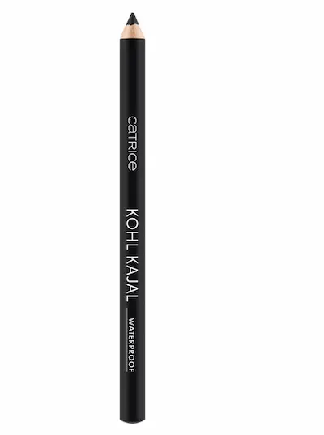
Не уверены, как сделать идеальный Smoky Eyes?
Smoky Eyes требует точной растушёвки, правильного градиента и баланса оттенков. Ошибки в нанесении могут превратить дымчатый эффект в тяжёлый или неаккуратный макияж.
Запишитесь к профессиональному визажисту и получите Smoky Eyes, который подчеркнёт глубину взгляда, создаст выразительный вечерний образ и будет идеально смотреться при любом освещении и на фото.
Записывайтесь на макияж.

Частые вопросы о Smoky Eyes
Что такое Smoky Eyes?
Smoky Eyes — это техника макияжа глаз с мягкой растушёвкой теней, создающая эффект дымчатого, глубокого и выразительного взгляда. Обычно используются тёмные оттенки: чёрный, серый, коричневый.
Кому подходит Smoky Eyes?
Smoky Eyes подходит всем, кто хочет сделать взгляд более выразительным. Особенно хорошо смотрится на вечерних мероприятиях, фотосессиях и праздниках.
Подходит ли Smoky Eyes для дневного макияжа?
Да, но в более лёгкой версии. Для дневного образа используют мягкие коричневые или серо-бежевые оттенки с лёгкой растушёвкой.
Какие тени лучше использовать для Smoky Eyes?
Лучше выбирать хорошо пигментированные матовые или сатиновые тени. Важно, чтобы они легко растушёвывались и создавали плавный градиент без резких линий.
Можно ли сделать Smoky Eyes самостоятельно?
Да, но важно соблюдать технику растушёвки и не наносить слишком много продукта сразу. Начинайте с лёгких слоёв и постепенно усиливайте интенсивность.
Подходит ли Smoky Eyes для нависшего века?
Да, при правильной технике Smoky Eyes помогает визуально раскрыть взгляд. Главное — правильно растушёвывать тени чуть выше складки века.